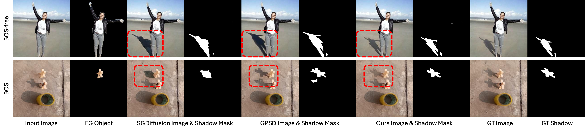
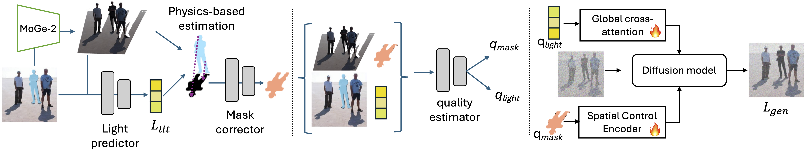
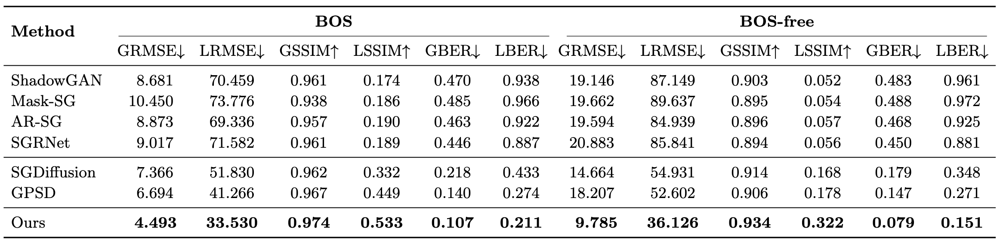
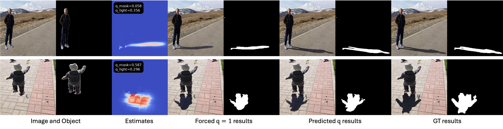

Embedding Physical Reasoning into Diffusion-based Shadow Generation
TL;DR. We propose a physics-grounded diffusion-based shadow generation pipeline that leverages monocular 3D geometry to recover a dominant light direction, then derives a coarse shadow estimate via geometric ray-based reasoning to anchor shadow placement. To account for ambiguous illumination, we predict confidence scores for both the lighting and shadow cues and use them to modulate their influence during generation, producing photorealistic shadows with improved localization and geometric consistency.

Abstract

Generating realistic shadows for inserted objects requires reasoning about scene geometry and illumination. However, most existing methods operate purely in image space, leaving the physical relationship between objects, lighting, and shadows to be learned implicitly, often resulting in misaligned or implausible shadows. We instead ground shadow generation in the physics of shadow formation. Given a composite image and an object mask, we recover approximate scene geometry and estimate a dominant light direction to derive a physics-grounded shadow estimate via geometric reasoning. While coarse, this estimate provides a spatial anchor for shadow placement. Because illumination cannot always be uniquely inferred from a single image, we predict confidence scores for both lighting and shadow cues and use them to regulate their influence during generation. These cues — shadow mask, light direction, and their confidences — condition a diffusion-based generator that refines the estimate into a realistic shadow. Experiments on DESOBAV2 show that our method improves both shadow realism and localization, achieving 23% lower shadow-region RMSE and 30% lower shadow-region BER over prior state-of-the-art.
Results
Quantitative Results

Comparison with state-of-the-art methods on DESOBAV2. We report global (G) and local (L, shadow-region) RMSE, SSIM, and BER for both BOS and BOS-free settings. GAN-based methods are pretrained on DESOBA, while diffusion-based methods are trained on DESOBAV2. Best scores are in bold.
Effect of Quality Score Estimation

Visualization of quality-guided generation. When unreliable conditioning is forced with q = 1, errors in the shadow and lighting cues are directly propagated to the result. Using the predicted quality scores lets the model reduce the influence of inaccurate guidance and produce more plausible shadows and cleaner object structure.
Qualitative Results

Visual results in both BOS (with background reference object–shadow pairs) and BOS-free (single object–shadow pair). Our method produces higher image fidelity and more accurate shadow masks that better respect occluder–receiver–illumination relationships.
Citation
@misc{hu2025physicsgroundedshadowgenerationmonocular,
title={Physics-Grounded Shadow Generation from Monocular 3D Geometry Priors and Approximate Light Direction},
author={Shilin Hu and Jingyi Xu and Akshat Dave and Dimitris Samaras and Hieu Le},
year={2025},
eprint={2512.06174},
archivePrefix={arXiv},
primaryClass={cs.CV},
url={https://arxiv.org/abs/2512.06174},
}